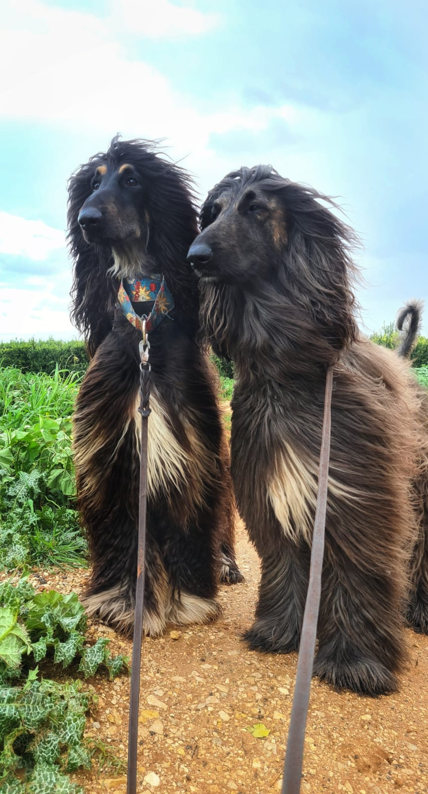

כלבי רוח אפגאנים
מאפיינים כלליים
כלבי רוח אפגאנים הם גזע כלבים מהיר ואלגנטי, עם פרווה ארוכה ורכה.
- גובה: 60-70 ס"מ
- משקל: 25-30 ק"ג
- תוחלת חיים: 12-14 שנים
מאפייני התנהגות
כלבים אלו ידועים בזכות:
- נאמנות
- עצמאות
- יכולת ריצה מרשימה
טיפוח ותחזוקה
דרישות הטיפוח של כלבי רוח אפגאנים כוללות:
| פעולה |
תדירות |
| סירוק פרווה |
פעמיים בשבוע |
| רחצה |
פעם בחודש |
תמונות של כלבי רוח אפגאנים

כלבים אלו הם תמצוגה של יופי ומהירות!
למידע נוסף
למידע נוסף על כלבי רוח אפגאנים, תוכלו לבקר באתר ה-חוג הישראלי לכלבי רוח.
סרטון על כלבי רוח אפגאנים